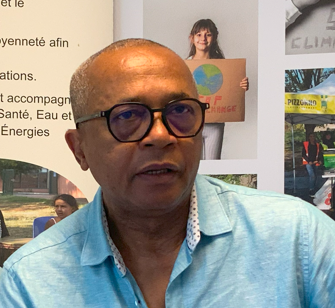
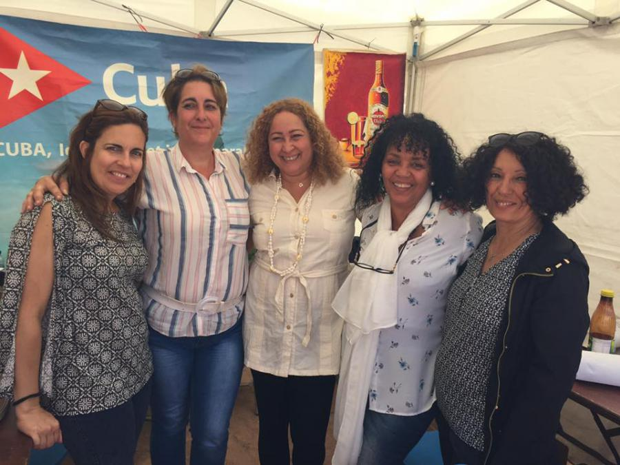

Le FATENotre histoire
Découvrez l'histoire, les missions et l'équipe du Forum Associatif Tous Ensemble (FATE), collectif engagé pour la solidarité et la culture à Lyon depuis 2001.
Une plateforme fédératrice au cœur de Lyon
Fondé en avril 2001, le Forum Associatif Tous Ensemble (F.A.T.E) est un collectif né d’une volonté de valoriser la contribution de l’Afrique au patrimoine culturel mondial.
À l'initiative de Roger Tonye Aguiar, ce collectif rassemble aujourd'hui des associations et des citoyens engagés pour la solidarité, l'éducation à la citoyenneté et la lutte contre les discriminations.
Un engagement local et international
Au fil de son évolution, le FATE s'est impliqué sur des enjeux majeurs : éducation artistique, sensibilisation au développement durable, et promotion des relations Nord-Sud.
Aujourd'hui, nous rassemblons des personnes de tous horizons (afro-descendants et amis de l'Afrique) pour promouvoir les valeurs de partage et d'entraide à travers des projets de co-développement concrets.
Nos Objectifs
- Promouvoir la diversité interculturelle
- Améliorer le vivre-ensemble
- Lutter contre les discriminations
- Accompagner les projets de co-développement
Notre Vision
Créer une société inclusive, juste et égalitaire où la diversité est valorisée. Nous visons à transformer les préjugés en dialogue pour une meilleure compréhension mutuelle.
Nos Valeurs
Solidarité, partage et respect sont les piliers qui guident chacune de nos actions, qu'elles soient menées localement à Lyon ou lors de nos missions internationales.
Les visages de l'engagement

Youssoufa BLONDY
Président
Albert BELTHIER
1er Vice Président
Cécile DULAUX MONTEIL
2ème Vice Président

Félina MARTINEZ
Secrétaire Générale
Julie ABOUI
Trésorière
Henri TIKI NKONGUE
Vice Trésorier